<title>The Court in 3D</title>
<meta name="claude:viewport-fit-sides" content="cover">
<link rel="preconnect" href="https://fonts.googleapis.com">
<link rel="stylesheet" href="https://fonts.googleapis.com/css2?family=Space+Grotesk:wght@500;700&family=Inter:wght@400;500;600&family=JetBrains+Mono:wght@400&display=swap">
<style>
/* Layout: one reading column of sections; each section is a question, its pictures, and its answer box beside the text. Sandstone and seat-blue from the court itself. */
:root {
  --bg: #f6f1ea;
  --panel: #fffaf3;
  --fg: #2a241d;
  --muted: #6d6256;
  --line: #e2d6c4;
  --accent: #b8692b;   /* the court's warm sandstone, deepened */
  --seat: #2f5fae;     /* the blue wizard's robe */
  --chosen: #f0dcc3;
  --display: "Space Grotesk", "Segoe UI", system-ui, sans-serif;
  --body: "Inter", "Segoe UI", system-ui, sans-serif;
  --mono: "JetBrains Mono", ui-monospace, Consolas, monospace;
}
@media (prefers-color-scheme: dark) { :root:not([data-theme="light"]) {
  --bg: #1b1814; --panel: #24201b; --fg: #efe6da; --muted: #a89b8a; --line: #3a332b;
  --accent: #e39a5a; --seat: #7fa6ea; --chosen: #4a3524; color-scheme: dark } }
:root[data-theme="dark"] {
  --bg: #1b1814; --panel: #24201b; --fg: #efe6da; --muted: #a89b8a; --line: #3a332b;
  --accent: #e39a5a; --seat: #7fa6ea; --chosen: #4a3524; color-scheme: dark }
body { background: var(--bg); color: var(--fg); font-family: var(--body); font-size: 15px; line-height: 1.55;
  padding-left: max(16px, env(safe-area-inset-left, 0px)); padding-right: max(16px, env(safe-area-inset-right, 0px)); padding-block: 0 4rem; }
main { max-width: 1100px; margin: 0 auto; display: grid; gap: 3rem; }
header { padding-block: 2.5rem 0.5rem; display: grid; gap: 0.75rem; }
.eyebrow { font-family: var(--mono); font-size: 12px; letter-spacing: 0.08em; text-transform: uppercase; color: var(--accent); }
h1 { font-family: var(--display); font-size: clamp(2rem, 5vw, 3rem); line-height: 1.05; margin: 0; text-wrap: balance; }
h2 { font-family: var(--display); font-size: 1.5rem; margin: 0; text-wrap: balance; }
h3 { font-family: var(--display); font-size: 1rem; margin: 0; }
p { margin: 0; max-width: 68ch; }
.lede { font-size: 1.05rem; color: var(--muted); }
.hero { border-radius: 10px; overflow: hidden; border: 1px solid var(--line); }
.hero img { display: block; width: 100%; }
section { display: grid; gap: 1.25rem; border-top: 1px solid var(--line); padding-top: 2rem; }
.top { display: grid; grid-template-columns: minmax(0, 1fr) minmax(260px, 340px); gap: 1.5rem; align-items: start; }
.top > div { min-width: 0; display: grid; gap: 0.75rem; }
@media (max-width: 760px) { .top { grid-template-columns: 1fr; } }
.shots { display: grid; gap: 1rem; grid-template-columns: repeat(auto-fit, minmax(280px, 1fr)); }
.shots.wide { grid-template-columns: 1fr; }
figure { margin: 0; display: grid; gap: 0.4rem; min-width: 0; }
figure img { width: 100%; display: block; border-radius: 6px; border: 1px solid var(--line); cursor: zoom-in; }
figcaption { font-size: 13px; color: var(--muted); }
.vids { display: grid; gap: 1rem; grid-template-columns: repeat(auto-fit, minmax(240px, 1fr)); min-width: 0; }
.vids video { width: 100%; display: block; border-radius: 6px; border: 1px solid var(--line); background: #000; cursor: zoom-in; aspect-ratio: 16 / 9; object-fit: cover; }
dialog video { max-width: 96vw; max-height: 92vh; display: block; border-radius: 6px; }
figcaption b { color: var(--fg); font-weight: 600; }
.answer { background: var(--panel); border: 1px solid var(--line); border-radius: 10px; padding: 1rem; display: grid; gap: 0.75rem; }
.answer .q { font-weight: 600; }
.rec { font-size: 13px; color: var(--muted); }
.rec b { color: var(--accent); }
.choices { display: flex; flex-wrap: wrap; gap: 0.4rem; }
.choices button { font: inherit; font-size: 14px; padding: 0.35rem 0.75rem; border-radius: 999px; border: 1px solid var(--line); background: transparent; color: var(--fg); cursor: pointer; }
.choices button:hover { border-color: var(--accent); }
.choices button[aria-pressed="true"] { background: var(--chosen); border-color: var(--accent); font-weight: 600; }
.choices button:focus-visible, textarea:focus-visible { outline: 2px solid var(--seat); outline-offset: 2px; }
textarea { font: inherit; font-size: 14px; width: 100%; min-height: 4.5rem; resize: vertical; padding: 0.5rem; border-radius: 6px; border: 1px solid var(--line); background: var(--bg); color: var(--fg); box-sizing: border-box; }
.status { font-family: var(--mono); font-size: 11px; color: var(--muted); min-height: 1em; }
ul { margin: 0; padding-left: 1.2rem; max-width: 68ch; display: grid; gap: 0.3rem; }
.mono { font-family: var(--mono); font-size: 13px; }
.facts { display: grid; grid-template-columns: repeat(auto-fit, minmax(170px, 1fr)); gap: 0.75rem; }
.fact { border-left: 2px solid var(--accent); padding-left: 0.75rem; }
.fact .n { font-family: var(--display); font-size: 1.35rem; font-variant-numeric: tabular-nums; }
.fact .l { font-size: 13px; color: var(--muted); }
dialog { border: 0; padding: 0; background: transparent; max-width: 96vw; max-height: 96vh; }
dialog img { max-width: 96vw; max-height: 92vh; display: block; border-radius: 6px; }
dialog::backdrop { background: rgba(0,0,0,0.8); }
@media (prefers-reduced-motion: no-preference) { .choices button { transition: background 120ms, border-color 120ms; } }
</style>

<main>
  <header>
    <div class="eyebrow">Port to 3D · step 0 · 2026-11-25</div>
    <h1>The Court in 3D</h1>
    <p class="lede"><b>New: <a href="#react">the bodies react</a>, the method's first step in motion.</b> Below it, <a href="#study">the study</a> and the four tone pieces you've judged. The game now runs on a second page, <span class="mono">play3d.html</span>, in the map editor's courtyard: the real sim, the real models, the kit's lighting, the game camera. Four things to decide before step 1 builds on them. Each box saves as you click; a box you leave empty means my recommendation stands.</p>
    <div class="hero">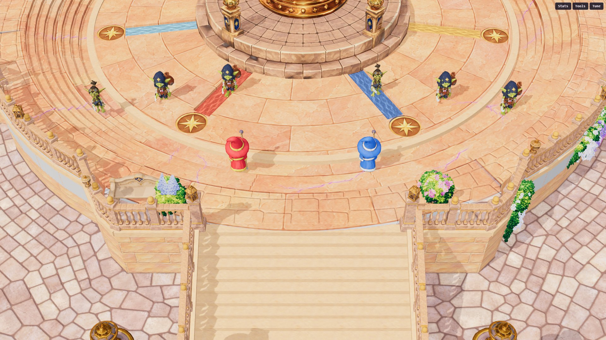</div>
  </header>

  <section id="react">
    <div class="top">
      <div>
        <h2>The bodies react</h2>
        <p>The first step of the method, the part every spell shares. Nothing about the spells themselves has changed yet: these are the same four tone pieces, now hitting a crowd.</p>
        <ul>
          <li><b>The lab's crowd is the pixel lab's:</b> a brute and ten goblins round the target, in reach. Before, they stood just outside the ring and the spray, so no hit was ever seen.</li>
          <li><b>The white hit flash on every hit.</b> The models flashed only on the first hit; a beam or spray held on a goblin now flickers it, as in the pixel game.</li>
          <li><b>Statuses on the body</b>, ported from the pixel game's: flame licks on the shoulders of a burning goblin (re-rolled 14 times a second), embers peeling off, and an orange light on it; frost glints and cold breath on a chilled one, bigger glints on a frozen one; sparks on a stunned one; drips on a wet one.</li>
        </ul>
        <p>Clips at 14 u, closer than the game, so the bodies show; the pair below is at the game's 30 u, pixel above, 3D below.</p>
      </div>
      <div class="answer" data-id="react" data-rec="keep">
        <div class="q">The bodies' reactions</div>
        <div class="choices" role="group" aria-label="Body reactions">
          <button type="button" data-v="keep">Right, go on to fire</button><button type="button" data-v="tune">Right idea, tune it</button><button type="button" data-v="redo">Not this</button>
        </div>
        <div class="rec">Recommended: <b>go on to fire</b>; the frost glints are small at the game camera and can grow with the frost blast.</div>
        <textarea id="note-react" aria-label="Note on the reactions" placeholder="The flash, the flames on the body, the frost"></textarea>
        <div class="status"></div>
      </div>
    </div>
    <div class="vids">
      <figure><video src="vid/react-fire.mp4" muted loop playsinline autoplay></video><figcaption><b>Fire</b> · the crowd flashes, then burns after the spray</figcaption></figure>
      <figure><video src="vid/react-arcane.mp4" muted loop playsinline autoplay></video><figcaption><b>Beam</b> · the goblin it holds flickers white</figcaption></figure>
      <figure><video src="vid/react-cold.mp4" muted loop playsinline autoplay></video><figcaption><b>Ring</b> · the near goblins flash and chill</figcaption></figure>
      <figure><video src="vid/react-earth.mp4" muted loop playsinline autoplay></video><figcaption><b>Rock</b> · the struck goblin flashes</figcaption></figure>
    </div>
    <div class="shots wide">
      <figure>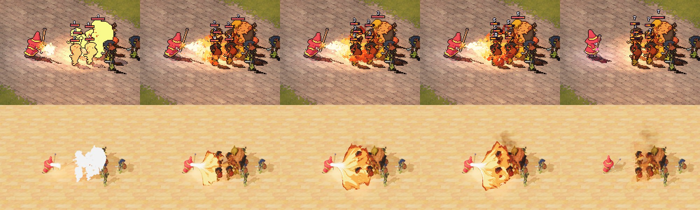<figcaption><b>Fire at 30 u</b> · the 3D crowd now flashes and burns as the pixel one does</figcaption></figure>
    </div>
  </section>

  <section id="study">
    <div class="top">
      <div>
        <h2>What the pixel effects had</h2>
        <p>Each tone piece beside its pixel version at the same five moments after the cast, three runes, at the game's scale: pixel above, 3D below. I also counted what each one draws.</p>
        <ul>
          <li><b>Half the pixel effect is on the bodies.</b> Every goblin the spell reaches flashes white, then burns or frosts over, and flickers white under a held beam; the rock throws them. In 3D the models only change tint, and no status draws anything on a body. That's most of "a stamp, not the effect of a beam hitting", and of the rock's wrong wall and enemy hits.</li>
          <li><b>Grain.</b> The pixel fire is about 685 small moving pieces at once, against 120 and one smooth mesh in 3D; the beam 55 against 8. Fine, changing detail reads as speed. Smooth gradients read as cloth and tubes.</li>
          <li><b>Stepped flicker.</b> The pixel beam glints white 30 times a second, the rock's speed lines flicker at 30 Hz, the frost glints at 7 Hz. The 3D versions slide smoothly, which reads as calm.</li>
          <li><b>Full strength.</b> Saturated, opaque colour and big floor glows. The 3D pieces came out pale and see-through: the ring is a grey disc, and the beam is a third as thick.</li>
          <li>Not the amount of motion: the share of each effect that changes from frame to frame is about the same in both.</li>
        </ul>
        <p>Stylised 3D games build these as a simple mesh carrying a painted texture that pans, bends and erodes, with many small fast pieces on top, and a white flash on whatever is hit. The method I'd build by, in seven rules, is in <span class="mono">docs/explorations/2026-11-25-spell-effects-study.md</span>: start from the pixel version's layers and match its counts and flicker; body reactions in every effect; painted textures on meshes; grain and stepped flicker; full saturation and size; impacts by ground, wall or body; judge beside the pixel version.</p>
      </div>
      <div class="answer" data-id="study-method" data-rec="yes">
        <div class="q">Is this the method for the next builds?</div>
        <div class="choices" role="group" aria-label="The method">
          <button type="button" data-v="yes">Yes</button><button type="button" data-v="adjust">Yes, with changes</button><button type="button" data-v="no">No</button>
        </div>
        <div class="rec">Recommended: <b>yes</b>. It overturns two of the tone round's draft rules: floor light stays small, and beams stay hat-thin.</div>
        <textarea id="note-study-method" aria-label="Note on the method" placeholder="A rule to add, change or drop"></textarea>
        <div class="status"></div>
      </div>
    </div>
    <div class="shots wide">
      <figure><figcaption><b>Fire</b> · 0.1, 0.3, 0.6, 1, 1.6 s. The pixel goblins burn; the 3D ones don't react</figcaption></figure>
      <figure><figcaption><b>Beam</b> · the same moments. Thick, saturated, glinting, a pink floor glow; against a pale thin line</figcaption></figure>
      <figure>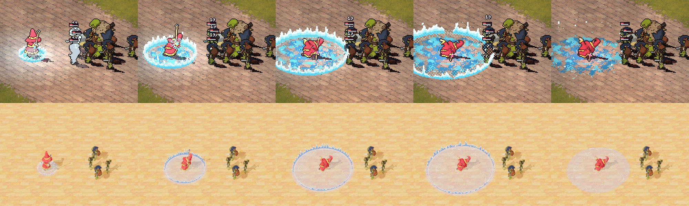<figcaption><b>Ring</b> · 0.05 to 0.9 s. A flash, an opaque cyan front, frost that fills the disc; against a grey disc</figcaption></figure>
      <figure><figcaption><b>Rock</b> · 0.1 to 1 s. Speed lines, a white burst, goblins thrown; against a brown tube</figcaption></figure>
    </div>
    <div class="top">
      <div>
        <p><b>What I'd build next.</b> First, what every spell shares: the 3D lab's goblins moved into reach (they stood just outside the ring and the spray, so the pieces were tuned without seeing hits), the white hit flash on the models, and a status layer on a body that each element fills in. Then fire, with a painted flame texture moving through its mesh and fast tongues on top; then the ring as a frost blast wave, the beam and the rock.</p>
      </div>
      <div class="answer" data-id="study-order" data-rec="shared">
        <div class="q">Shared body reactions first?</div>
        <div class="choices" role="group" aria-label="Build order">
          <button type="button" data-v="shared">Yes, then fire</button><button type="button" data-v="fire">Fire first</button><button type="button" data-v="other">Another order</button>
        </div>
        <div class="rec">Recommended: <b>yes, then fire</b>. It mends part of all four verdicts at once.</div>
        <textarea id="note-study-order" aria-label="Note on the build order" placeholder="Which spell matters most to you"></textarea>
        <div class="status"></div>
      </div>
    </div>
    <div class="top">
      <div>
        <p><b>One for the scene, not the effects:</b> the 3D court's floor is much paler and brighter than the pixel paving, so a see-through effect has no mid or dark value under it. Effects can bring their own darks, but the court's exposure may want a look in the port thread too.</p>
      </div>
      <div class="answer" data-id="study-floor" data-rec="look">
        <div class="q">Look at the court's brightness?</div>
        <div class="choices" role="group" aria-label="Court floor brightness">
          <button type="button" data-v="look">Yes, try it darker</button><button type="button" data-v="keep">No, effects adapt</button>
        </div>
        <div class="rec">Recommended: <b>try it darker</b>, side by side, in the port thread.</div>
        <textarea id="note-study-floor" aria-label="Note on the floor" placeholder="How the court should feel"></textarea>
        <div class="status"></div>
      </div>
    </div>
  </section>

  <section id="camera">
    <div class="top">
      <div>
        <h2>How far back the camera sits</h2>
        <p>The camera looks down from the south at 46°, through a narrow 28° lens, and never turns. The only knob is how much ground fits top to bottom. The pixel game shows 33.75 units of height on a 1080p screen, of which 21.25 are the play area between the sky strip and the rune bar.</p>
        <p>At 34 the models read small and the plaza is whole. At 20 the wizards are big, but you see little of what's coming. 26 is between.</p>
      </div>
      <div class="answer" data-id="cam" data-rec="26">
        <div class="q">Which distance?</div>
        <div class="choices" role="group" aria-label="Camera distance">
          <button type="button" data-v="20">20 u</button><button type="button" data-v="26">26 u</button><button type="button" data-v="34">34 u</button><button type="button" data-v="other">Other</button>
        </div>
        <div class="rec">Recommended: <b>26 u</b>, then tune it in play.</div>
        <textarea id="note-cam" aria-label="Note on the camera distance" placeholder="Anything about the framing"></textarea>
        <div class="status"></div>
      </div>
    </div>
    <div class="shots">
      <figure><figcaption><b>20 u</b> · close</figcaption></figure>
      <figure><figcaption><b>26 u</b> · recommended</figcaption></figure>
      <figure><figcaption><b>34 u</b> · the pixel game's full height</figcaption></figure>
    </div>
  </section>

  <section id="fade">
    <div class="top">
      <div>
        <h2>Seeing a wizard behind a building</h2>
        <p>A steep 3D camera lets walls hide you, which the flat pixel rooms never did. Here the red wizard stands on the road behind the great hall. Without help it vanishes. The first fix faded whole pieces, which turned the hall into noise. The second cuts a soft dithered hole through whatever stands between the camera and a local wizard, and only there.</p>
        <p>Not yet judged in the court's narrow corners. A goblin silhouette through walls comes with the goblins in step 4.</p>
      </div>
      <div class="answer" data-id="fade" data-rec="hole">
        <div class="q">Keep the dithered hole?</div>
        <div class="choices" role="group" aria-label="Hidden wizards">
          <button type="button" data-v="hole">Keep the hole</button><button type="button" data-v="silhouette">Silhouette instead</button><button type="button" data-v="redo">Try again</button>
        </div>
        <div class="rec">Recommended: <b>keep the hole</b>, add silhouettes in step 4, judge both in tight spots.</div>
        <textarea id="note-fade" aria-label="Note on hidden wizards" placeholder="Size of the hole, its edge, what it should spare"></textarea>
        <div class="status"></div>
      </div>
    </div>
    <div class="shots">
      <figure><figcaption><b>Nothing</b> · the wizard is behind the hall</figcaption></figure>
      <figure><figcaption><b>Whole pieces fade</b> · first try, rejected</figcaption></figure>
      <figure><figcaption><b>A dithered hole</b> · recommended</figcaption></figure>
    </div>
  </section>

  <section id="bodies">
    <div class="top">
      <div>
        <h2>The characters without the pixel filter</h2>
        <p>The same models and the same posing code as the pixel game, now standing in the scene, lit by the court's sun and casting shadows. Scale stays the pixel game's (the wizard 2.7 u, about 1.6 m), and the hat hiding the face is the intended look. The strip under each shot is today's pixel version, for comparison.</p>
        <p>What still reads badly:</p>
        <ul>
          <li>the four common goblins share one lime green and read alike at the game distance;</li>
          <li>the chieftain's maul head is a plain box, and the flame sword has no flame yet (both were 2D effects);</li>
          <li>the Mirror guard reads as a pale board;</li>
          <li>close up, the Meshy textures are blotchy and the wizard's hands are mittens.</li>
        </ul>
        <p>The bright orange floor in these two shots is a test paving, not the court's.</p>
      </div>
      <div class="answer" data-id="bodies" data-rec="keep">
        <div class="q">Are the unfiltered models the way forward?</div>
        <div class="choices" role="group" aria-label="Characters">
          <button type="button" data-v="keep">Yes, fix the list</button><button type="button" data-v="redo">Needs more first</button><button type="button" data-v="pixel">Bring the pixel look back</button>
        </div>
        <div class="rec">Recommended: <b>yes</b>; the fixes join step 4 (goblins) and the effects pass (sword, guards).</div>
        <textarea id="note-bodies" aria-label="Note on the characters" placeholder="Which model bothers you most"></textarea>
        <div class="status"></div>
      </div>
    </div>
    <div class="shots wide">
      <figure><figcaption><b>The band attacking</b> · 26 u, the game's distance</figcaption></figure>
      <figure>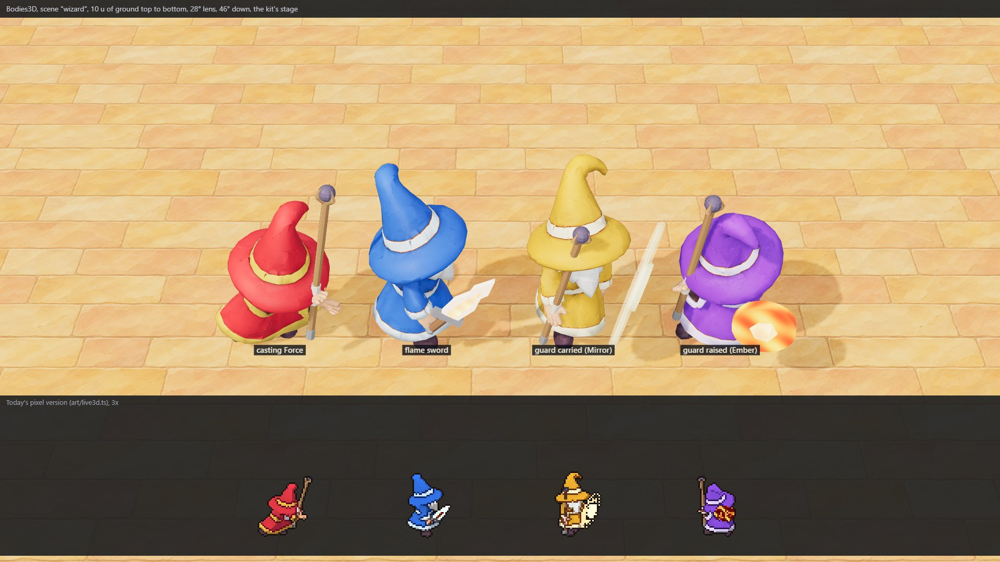<figcaption><b>Close up</b> · casting Force, the flame sword, the Mirror carried, the Ember raised</figcaption></figure>
    </div>
  </section>

  <section id="motion">
    <div class="top">
      <div>
        <h2>The four in motion</h2>
        <p>All four tone pieces are built in the game, each from your pick, and filmed at the game camera (30 u) in the court and in the lab. After your verdict on the first fire, nothing is a cluster of sprites: each main body is one mesh shaded in its shader, and particles only add sparks, embers and chips. Clips loop; click one to play it larger.</p>
        <p>My read, before yours:</p>
        <ul>
          <li><b>Arcane beam:</b> closest to its concept. Crisp line, white core, dark rim, a star where it lands. In the court a 3-rune beam kills a goblin in under a second, so the impact is a short flash per goblin.</li>
          <li><b>Cold ring:</b> reads as cold and as one front that sweeps out, quieter as you asked. In the court it may now be too quiet.</li>
          <li><b>Earth rock:</b> the rock, its shadow, the flying chips and the crack star work. The dust is flat, like brown stains on the stone, not the painting's billows.</li>
          <li><b>Fire:</b> one shape now, not sprites, but it reads as pale orange cloth, not fire. I'd hand fire to the dedicated effects session with one job: a painted flame texture moving through the mesh.</li>
        </ul>
      </div>
      <div class="answer" data-id="motion-fire" data-rec="handoff">
        <div class="q">Fire</div>
        <div class="choices" role="group" aria-label="Fire in motion">
          <button type="button" data-v="keep">Good enough for now</button><button type="button" data-v="tune">Keep at it here</button><button type="button" data-v="handoff">Hand to the effects session</button>
        </div>
        <div class="rec">Recommended: <b>hand it on</b>, with the painted-texture plan.</div>
        <textarea id="note-motion-fire" aria-label="Note on fire in motion" placeholder="What reads wrong in motion"></textarea>
        <div class="status"></div>
      </div>
    </div>
    <div class="vids">
      <figure><video src="vid/fire-court-n3.mp4" muted loop playsinline autoplay></video><figcaption><b>Fire</b> · 3 runes in the court, swelling in</figcaption></figure>
      <figure><video src="vid/fire-lab-n5.mp4" muted loop playsinline autoplay></video><figcaption><b>Fire</b> · 5 runes in the lab</figcaption></figure>
      <figure><video src="vid/fire-sweep-n3.mp4" muted loop playsinline autoplay></video><figcaption><b>Fire</b> · a sweep</figcaption></figure>
    </div>

    <div class="top">
      <div class="vids">
        <figure><video src="vid/arcane-court-a.mp4" muted loop playsinline autoplay></video><figcaption><b>Beam, impact a</b> · restrained, in the court</figcaption></figure>
        <figure><video src="vid/arcane-court-b.mp4" muted loop playsinline autoplay></video><figcaption><b>Beam, impact b</b> · fuller, in the court</figcaption></figure>
        <figure><video src="vid/arcane-lab-n5-a.mp4" muted loop playsinline autoplay></video><figcaption><b>5 runes, a</b> · halo, white core, rings off the staff</figcaption></figure>
        <figure><video src="vid/arcane-lab-n5-b.mp4" muted loop playsinline autoplay></video><figcaption><b>5 runes, b</b></figcaption></figure>
      </div>
      <div class="answer" data-id="motion-arcane" data-rec="a">
        <div class="q">The beam's impact</div>
        <div class="choices" role="group" aria-label="Beam impact">
          <button type="button" data-v="a">a, restrained</button><button type="button" data-v="b">b, fuller</button><button type="button" data-v="mix">a, b at 5 runes</button><button type="button" data-v="redo">Neither</button>
        </div>
        <div class="rec">Recommended: <b>a</b>; it reads at 30 u without covering the goblin.</div>
        <textarea id="note-motion-arcane" aria-label="Note on the beam" placeholder="The beam in motion"></textarea>
        <div class="status"></div>
      </div>
    </div>

    <div class="top">
      <div class="vids">
        <figure><video src="vid/earth-court-n1-partial.mp4" muted loop playsinline autoplay></video><figcaption><b>Rock, 1 rune</b> · in the court (the clip stops just after the impact)</figcaption></figure>
        <figure><video src="vid/earth-lab-n1.mp4" muted loop playsinline autoplay></video><figcaption><b>1 rune</b> · a small rock</figcaption></figure>
        <figure><video src="vid/earth-lab-n5.mp4" muted loop playsinline autoplay></video><figcaption><b>5 runes</b> · twice the size, a crater</figcaption></figure>
        <figure><video src="vid/earth-lab-n5-charged.mp4" muted loop playsinline autoplay></video><figcaption><b>5 runes charged</b> · it pierces, small impacts on the way</figcaption></figure>
      </div>
      <div class="answer" data-id="motion-earth" data-rec="tune">
        <div class="q">The rock</div>
        <div class="choices" role="group" aria-label="Earth rock in motion">
          <button type="button" data-v="keep">Good</button><button type="button" data-v="tune">Right, but the dust needs volume</button><button type="button" data-v="redo">Off</button>
        </div>
        <div class="rec">Recommended: <b>the dust needs volume</b>. One rock that grows with runes (a cluster would need a sim change), and keep the small camera jolt on impact.</div>
        <textarea id="note-motion-earth" aria-label="Note on the rock" placeholder="Size, dust, the jolt"></textarea>
        <div class="status"></div>
      </div>
    </div>

    <div class="top">
      <div class="vids">
        <figure><video src="vid/cold-court-n3.mp4" muted loop playsinline autoplay></video><figcaption><b>Ring, 3 runes</b> · in the court</figcaption></figure>
        <figure><video src="vid/cold-lab-n1.mp4" muted loop playsinline autoplay></video><figcaption><b>1 rune</b></figcaption></figure>
        <figure><video src="vid/cold-lab-n5.mp4" muted loop playsinline autoplay></video><figcaption><b>5 runes</b> · the ring stands a moment before it breaks</figcaption></figure>
        <figure><video src="vid/cold-lab-n3-walk.mp4" muted loop playsinline autoplay></video><figcaption><b>Walking</b> · the front follows, the rime stays</figcaption></figure>
      </div>
      <div class="answer" data-id="motion-cold" data-rec="keep">
        <div class="q">The ring</div>
        <div class="choices" role="group" aria-label="Cold ring in motion">
          <button type="button" data-v="keep">Good</button><button type="button" data-v="louder">A bit louder</button><button type="button" data-v="redo">Off</button>
        </div>
        <div class="rec">Recommended: <b>good</b>; if it's too quiet in the court, raise the rime and the light under it, not the front.</div>
        <textarea id="note-motion-cold" aria-label="Note on the ring" placeholder="The ring in motion"></textarea>
        <div class="status"></div>
      </div>
    </div>
  </section>

  <section id="fire3">
    <div class="top">
      <div>
        <h2>Fire, built to your pick</h2>
        <p>Toon volume, without streaks, now in the game in place of the stand-in. Back to front: smoke off the far end only, a deep red rim, flame licks at the edge, a body of big rolling flame masses, a soft white-hot core, embers, and warm light on the floor. Four new Codex sheets paint the flames, smoke, the floor's carpet and its cracks. The cone and its stopping point are the sim's own, a sweep bends like a hose, and five runes make a wall of fire with a plume of smoke.</p>
        <p>The floor is a carpet of short flames over char and glowing cracks, lower and ragged at the edge; a burning patch flares up, sinks, and leaves char for a few seconds.</p>
        <p>Against the painting, in my view:</p>
        <ul>
          <li>It reads as one mass of fire, which neither earlier look did.</li>
          <li>The body is a cloud of evenly sized round puffs; the painting's flames have tongues and a clear direction.</li>
          <li>In the court it's a short, wide band. The sim's 3-rune cone is 96° against the painting's ~65°, and in that shot the goblins walk into it and cut it short. In the lab, with room to reach, it's much closer.</li>
          <li>The core hides behind the caster when they face north, and the floor light is weaker than in the painting.</li>
        </ul>
      </div>
      <div class="answer" data-id="fire3" data-rec="tune">
        <div class="q">Where is it?</div>
        <div class="choices" role="group" aria-label="Built fire">
          <button type="button" data-v="keep">Good enough as the tone</button><button type="button" data-v="tune">Right direction, keep tuning</button><button type="button" data-v="redo">Off</button>
        </div>
        <div class="rec">Recommended: <b>keep tuning</b>, toward flame tongues instead of puffs. And keep the sim's cone as it is: hit shapes must stay true.</div>
        <textarea id="note-fire3" aria-label="Note on the built fire" placeholder="What's closest to the painting, what's furthest"></textarea>
        <div class="status"></div>
      </div>
    </div>
    <div class="shots wide">
      <figure>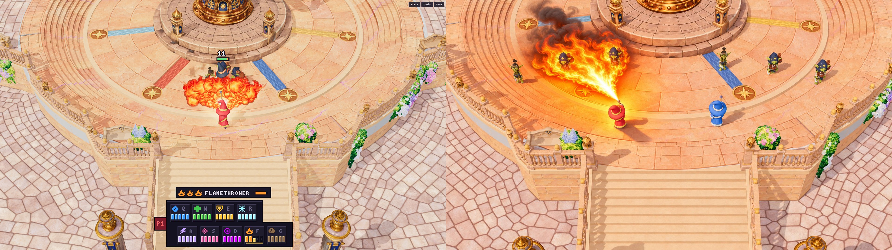<figcaption><b>Built, left; your pick, right</b> · 3 runes in the court at 30 u</figcaption></figure>
      <figure>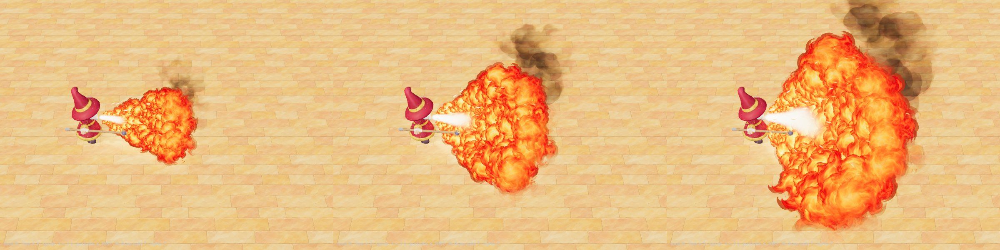<figcaption><b>1, 3 and 5 runes</b> · in the lab, with room to reach</figcaption></figure>
      <figure><figcaption><b>A sweep</b> · the flames in flight keep their line</figcaption></figure>
      <figure>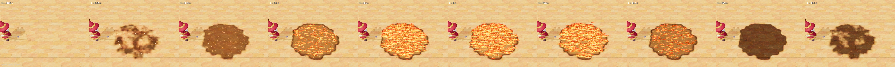<figcaption><b>The floor's life</b> · char spreads, flares, burns, dies down to char</figcaption></figure>
    </div>
  </section>

  <section id="tone">
    <div class="top">
      <div>
        <h2>The tone pieces: beam, rock and ring</h2>
        <p>Your toon fire, carried to one of each other kind of effect: a line of energy (the Arcane beam), a solid (the Earth rock and its impact) and an area wave (the Cold ring). Once these four are right, they become a short spell-look guide, and a dedicated effects session does every other spell from it in batches.</p>
        <p>The four together read as one family: the same toon shading, a bright core, a darker rim, residue on the floor. Their weight differs: fire and the ring are loud, the beam is slimmer, and the rock is the quiet one, the only effect with no light of its own, so its weight has to come from the impact and dark dust. Each will be sized to the sim, not the painting; the painted ring is wider than its 4 u.</p>
        <p>Draft rules from them:</p>
        <ul>
          <li>Layers: a bright core, a saturated body, a thin darker rim, the element's residue, then light on the floor.</li>
          <li>Stand out on pale stone by value: each effect brings a white or a dark the floor lacks.</li>
          <li>Light follows the shape and stays small: a strip, a pool or a ring, never a wash over the court.</li>
          <li>Scale against the wizard: a spray about two wizards long, a beam about a hat wide, a rock about a goblin tall, a ring's front knee-high.</li>
          <li>More runes add layers (a halo, a hotter core, a crater), not only size.</li>
          <li>No streaks or outlines added to explain a shape.</li>
        </ul>
      </div>
      <div class="answer" data-id="tone-family" data-rec="yes">
        <div class="q">Is this the family and are these the rules?</div>
        <div class="choices" role="group" aria-label="Tone family">
          <button type="button" data-v="yes">Yes</button><button type="button" data-v="adjust">Yes, with changes</button><button type="button" data-v="no">No</button>
        </div>
        <div class="rec">Recommended: <b>yes</b>.</div>
        <textarea id="note-tone-family" aria-label="Note on the family and rules" placeholder="A rule to add, change or drop"></textarea>
        <div class="status"></div>
      </div>
    </div>
    <div class="shots wide">
      <figure>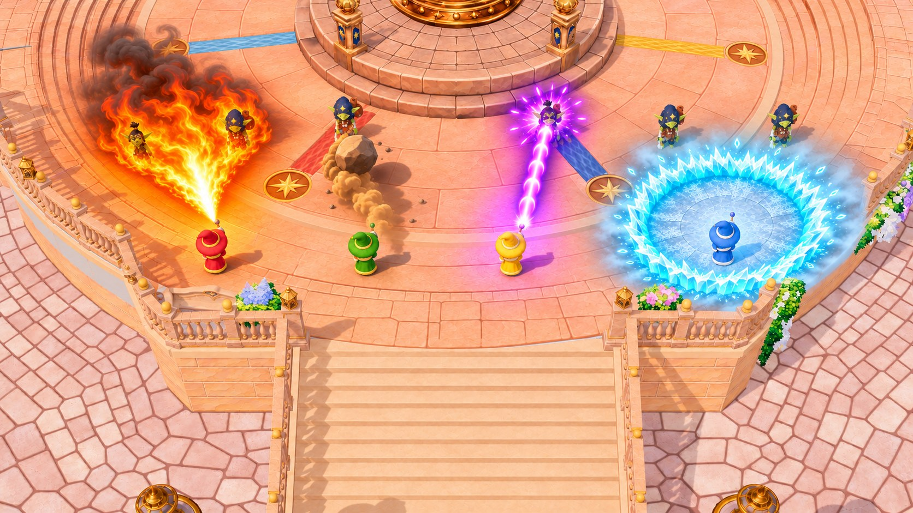<figcaption><b>The four together</b> · fire, the rock, the beam, the ring</figcaption></figure>
    </div>
    <div class="top">
      <div class="shots">
        <figure><figcaption><b>Beam, toon</b> · a violet rope with white-hot beads, a narrow strip of light</figcaption></figure>
        <figure>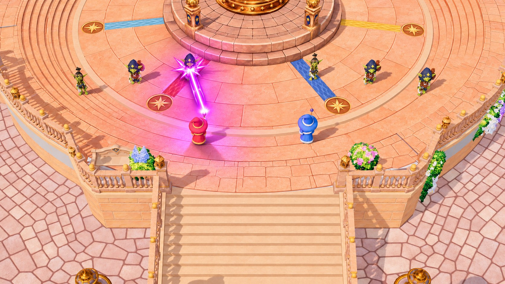<figcaption><b>Beam, crisp</b> · the alternative</figcaption></figure>
      </div>
      <div class="answer" data-id="tone-arcane" data-rec="toon">
        <div class="q">The Arcane beam</div>
        <div class="choices" role="group" aria-label="Arcane beam">
          <button type="button" data-v="toon">Toon</button><button type="button" data-v="crisp">Crisp</button><button type="button" data-v="redo">Neither</button>
        </div>
        <div class="rec">Recommended: <b>toon</b>.</div>
        <textarea id="note-tone-arcane" aria-label="Note on the beam" placeholder="Thicker, thinner, the light"></textarea>
        <div class="status"></div>
      </div>
    </div>
    <div class="top">
      <div class="shots">
        <figure>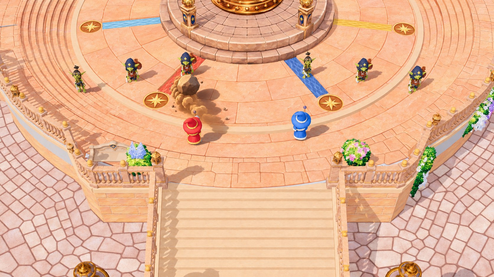<figcaption><b>Rock in flight</b> · dark ochre dust behind it</figcaption></figure>
        <figure>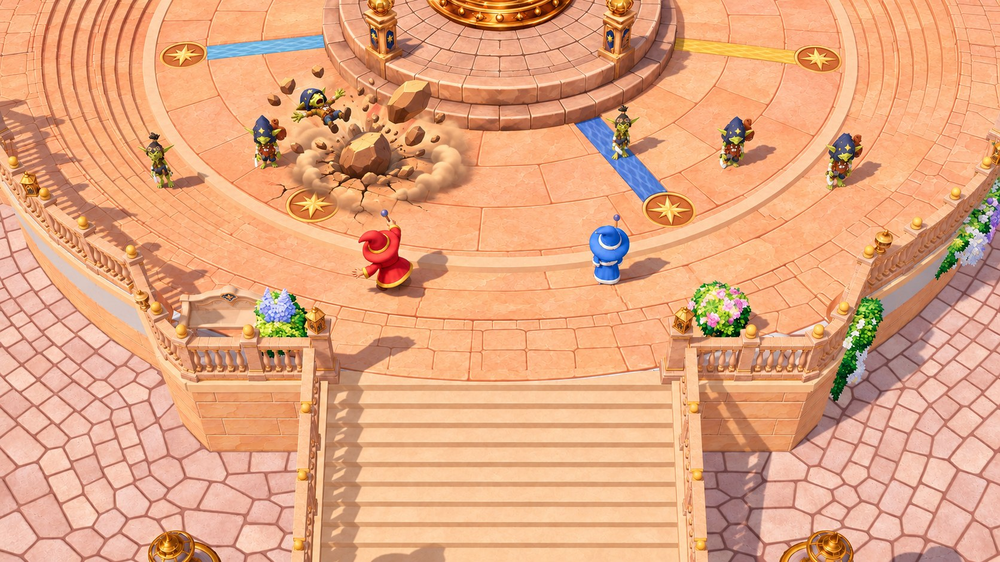<figcaption><b>Its impact</b> · shards, a dust ring, cracks, the goblin thrown</figcaption></figure>
        <figure><figcaption><b>Chunky</b> · reads as the floor erupting; kept for the Earthquake</figcaption></figure>
      </div>
      <div class="answer" data-id="tone-earth" data-rec="toon">
        <div class="q">The Earth rock</div>
        <div class="choices" role="group" aria-label="Earth rock">
          <button type="button" data-v="toon">Toon</button><button type="button" data-v="chunky">Chunky</button><button type="button" data-v="redo">Neither</button>
        </div>
        <div class="rec">Recommended: <b>toon</b>, the chunky one saved for the quake.</div>
        <textarea id="note-tone-earth" aria-label="Note on the rock" placeholder="Weight, dust, the impact"></textarea>
        <div class="status"></div>
      </div>
    </div>
    <div class="top">
      <div class="shots">
        <figure>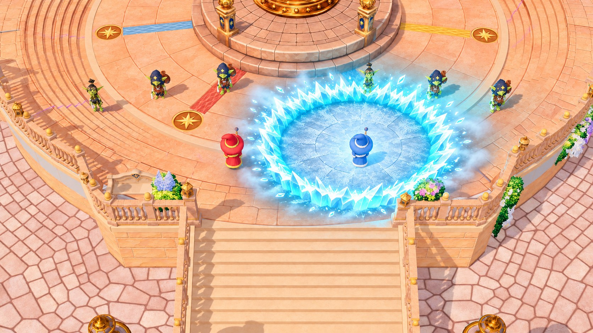<figcaption><b>Ring, toon</b> · a jagged cyan-white wall, mist outside, rime inside</figcaption></figure>
        <figure>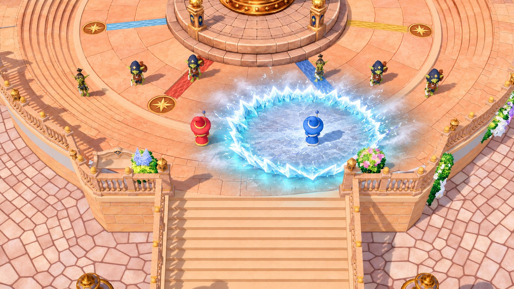<figcaption><b>Ring, crisp</b> · a thinner glassy front that sweeps</figcaption></figure>
      </div>
      <div class="answer" data-id="tone-cold" data-rec="toon">
        <div class="q">The Cold ring</div>
        <div class="choices" role="group" aria-label="Cold ring">
          <button type="button" data-v="toon">Toon</button><button type="button" data-v="crisp">Crisp</button><button type="button" data-v="redo">Neither</button>
        </div>
        <div class="rec">Recommended: <b>toon</b>; the crisp front is a real alternative if a wall feels too heavy.</div>
        <textarea id="note-tone-cold" aria-label="Note on the ring" placeholder="Wall or sweep, the frost left behind"></textarea>
        <div class="status"></div>
      </div>
    </div>
  </section>

  <section id="fire2">
    <div class="top">
      <div>
        <h2>Fire, round 2: from concept art</h2>
        <p>You turned down both built looks, so this round started from pictures. Codex repainted the court shot with a Fire spray in seven styles, then a burning floor and a fire ring for the strongest. 24 images in all are in <span class="mono">docs/reference/spell-concepts/fire/</span>; these are the best of each.</p>
        <ul>
          <li><b>Toon volume:</b> the best-looking fire. A white-hot core leaves the staff and swells into a rolling flame body with a red rim, dark smoke at the far end.</li>
          <li><b>Hybrid:</b> the toon body with straight white streaks fanning from the staff to the cone's edges. The most readable cone.</li>
          <li><b>Magicka jets:</b> a crisp fan of streaks from one point, close to a sparkler.</li>
          <li><b>Painted ribbons, dragon breath, cel:</b> flat like a decal, lava rather than fire, or a comic sticker pasted on the court.</li>
        </ul>
        <p>The floor that works is a low carpet of short flames on charred stone, not a campfire. All of them show that on the court's pale stone, fire needs a white core, a dark rim, smoke or char to stand out.</p>
      </div>
      <div class="answer" data-id="fire2" data-rec="hybrid">
        <div class="q">Which direction to build?</div>
        <div class="choices" role="group" aria-label="Fire direction">
          <button type="button" data-v="toon">Toon volume</button><button type="button" data-v="hybrid">Hybrid</button><button type="button" data-v="jets">Magicka jets</button><button type="button" data-v="other">Other</button>
        </div>
        <div class="rec">Recommended: <b>hybrid</b>. Streaks over the first third of the cone give it its shape, painted toon flame cells give the body, smoke only off the far end. The current effects base can build it with a new painted flame sheet. Its risk: too many streaks and it reads as orange energy.</div>
        <textarea id="note-fire2" aria-label="Note on the fire direction" placeholder="What to keep or change from the pictures"></textarea>
        <div class="status"></div>
      </div>
    </div>
    <div class="shots">
      <figure><figcaption><b>Hybrid</b> · recommended</figcaption></figure>
      <figure><figcaption><b>Toon volume</b></figcaption></figure>
      <figure>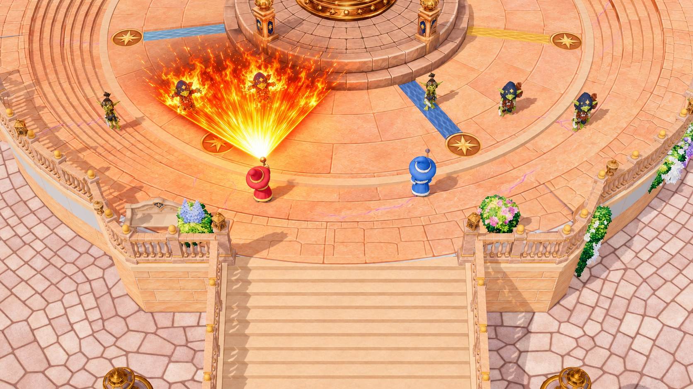<figcaption><b>Magicka jets</b></figcaption></figure>
      <figure><figcaption><b>Painted ribbons</b></figcaption></figure>
      <figure><figcaption><b>Dragon breath</b></figcaption></figure>
      <figure><figcaption><b>Cel, hard edges</b></figcaption></figure>
      <figure><figcaption><b>The floor</b> · a low carpet of flame on char</figcaption></figure>
      <figure><figcaption><b>The ring</b> · hybrid</figcaption></figure>
      <figure>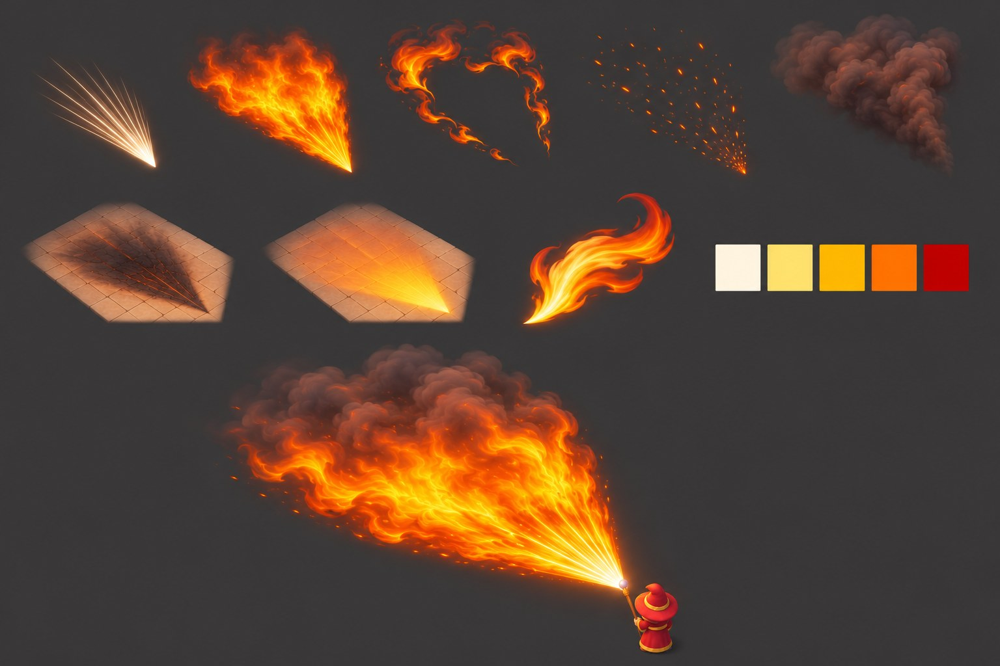<figcaption><b>The layers</b> · core, body, licks, embers, smoke, scorch, light</figcaption></figure>
    </div>
  </section>

  <section id="fire">
    <div class="top">
      <div>
        <h2>Fire, round 1: two built looks (you chose neither)</h2>
        <p>The first spell family on the new effects base. Every particle is worked out from time and a seed alone, so rollback and freezing a moment still work, and the drawn fan is the sim's own hit cone. Two looks with the same motion:</p>
        <ul>
          <li><b>A</b>: soft particles shaped and coloured by code. It reads as orange smoke on sunlit stone.</li>
          <li><b>B</b>: each particle is a frame from a sheet of flames painted by Codex. It reads as fire.</li>
        </ul>
        <p>B's faults for the next round: it looks more like a bonfire than a jet leaving the staff; at full flow the fan goes hollow in the middle; and the burning floor is too even, with no grow-in.</p>
      </div>
      <div class="answer" data-id="fire" data-rec="b">
        <div class="q">Which direction for fire?</div>
        <div class="choices" role="group" aria-label="Fire look">
          <button type="button" data-v="a">A, code-shaped</button><button type="button" data-v="b">B, painted sheets</button><button type="button" data-v="neither">Neither</button>
        </div>
        <div class="rec">Recommended: <b>B</b>, keeping A's code layers that work in both (embers, the char bed, the fan of light).</div>
        <textarea id="note-fire" aria-label="Note on fire" placeholder="What fire should feel like"></textarea>
        <div class="status"></div>
      </div>
    </div>
    <div class="shots">
      <figure><figcaption><b>A</b> · 5 runes, spray and floor</figcaption></figure>
      <figure><figcaption><b>B</b> · 5 runes, spray and floor</figcaption></figure>
      <figure>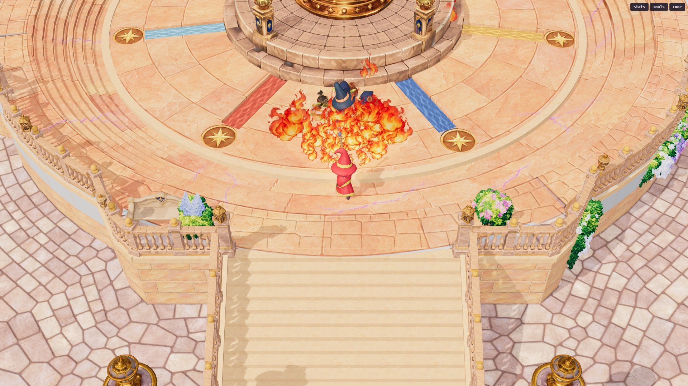<figcaption><b>B in the court</b> · 3 runes on the plaza</figcaption></figure>
    </div>
    <div class="shots wide">
      <figure><figcaption><b>B, 5 runes</b> · 0.1, 0.3, 0.6, 1 and 2 s</figcaption></figure>
      <figure>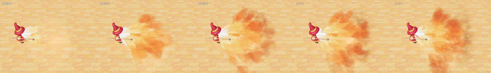<figcaption><b>A, 5 runes</b> · the same moments</figcaption></figure>
      <figure>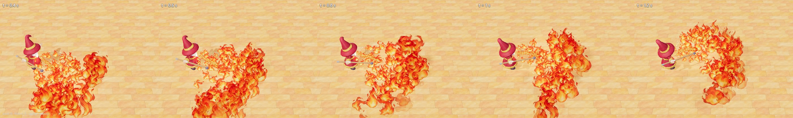<figcaption><b>B sweeping</b> · flames in flight keep their line, like a hose</figcaption></figure>
      <figure>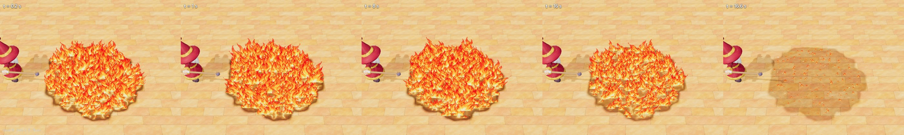<figcaption><b>B's floor</b> · 0.2, 1, 8, 16 and 16.6 s, dying to char</figcaption></figure>
    </div>
  </section>

  <section id="walk">
    <div class="top">
      <div>
        <h2>The ground the sim walks on</h2>
        <p>The court's sim room now comes from the map editor's scene, so there is one map. Walkable ground is light, blocked ground hatched, stairs yellow, walls black, cliffs red, building and prop footprints blue, and the scene's new markers labelled. Height edges are walls both ways for now; the room file also keeps each edge's kind and height for shots over parapets later.</p>
        <p>Known flaws: the ring of steps round the sunk plaza comes out as a wide band, and curved walls are small stair-steps. Neither shows in the 3D picture.</p>
      </div>
      <div class="answer" data-id="walk" data-rec="ok">
        <div class="q">Does the walkable area match the court?</div>
        <div class="choices" role="group" aria-label="Walk grid">
          <button type="button" data-v="ok">Looks right</button><button type="button" data-v="wrong">Something's off</button>
        </div>
        <div class="rec">Recommended: <b>looks right</b>. Say where if not.</div>
        <textarea id="note-walk" aria-label="Note on the walk grid" placeholder="A place you should or shouldn't be able to walk"></textarea>
        <div class="status"></div>
      </div>
    </div>
    <div class="shots">
      <figure><figcaption><b>The whole court</b> · gates at the yard, battery, north and sea</figcaption></figure>
      <figure>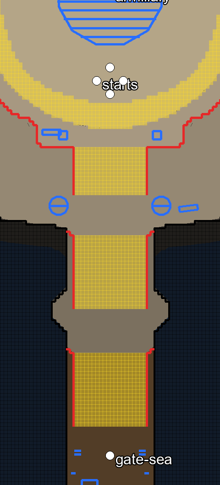<figcaption><b>The sea stairs</b> · three flights, their landings joined</figcaption></figure>
    </div>
  </section>

  <section id="numbers">
    <h2>Weight, before anyone else plays it</h2>
    <p>Measured on the dev machine (Radeon 780M, 1920 × 1080), before any batching. Fine here, too heavy for a friend's laptop. Batching the kit and loading only the court's models come before the swap.</p>
    <div class="facts">
      <div class="fact"><div class="n">43 fps</div><div class="l">23 ms a frame in the court</div></div>
      <div class="fact"><div class="n">2,565</div><div class="l">draw calls a frame</div></div>
      <div class="fact"><div class="n">104 MB</div><div class="l">downloaded on first load</div></div>
      <div class="fact"><div class="n">4.4–5.7 s</div><div class="l">load to the built scene, locally</div></div>
    </div>
  </section>

  <section id="general">
    <div class="top">
      <div>
        <h2>Anything else</h2>
        <p>Next is step 1 and 2: walking and casting in the court with every spell drawn as its hit shape, the HUD back over the 3D view, and a flat practice ground to replace the Sanctum. Then the swap.</p>
      </div>
      <div class="answer" data-id="general">
        <div class="q">Notes</div>
        <textarea id="note-general" aria-label="General notes" placeholder="Anything the port should do differently"></textarea>
        <div class="status"></div>
      </div>
    </div>
  </section>
</main>
<dialog id="zoom"></dialog>

<script>
const zoom = document.getElementById('zoom');
for (const img of document.querySelectorAll('figure img')) img.addEventListener('click', () => { zoom.querySelector('img').src = img.src; zoom.querySelector('img').alt = img.alt; zoom.showModal(); });
for (const v of document.querySelectorAll('.vids video')) v.addEventListener('click', () => {
  const big = document.createElement('video');
  Object.assign(big, { src: v.src, muted: true, loop: true, autoplay: true, playsInline: true, controls: true });
  zoom.replaceChildren(big); zoom.showModal();
});
for (const img of document.querySelectorAll('figure img')) img.addEventListener('click', () => { if (!zoom.querySelector('img')) zoom.replaceChildren(document.createElement('img')); });
zoom.addEventListener('click', (e) => { if (e.target === zoom) zoom.close(); });
zoom.addEventListener('close', () => { if (!zoom.querySelector('img')) zoom.replaceChildren(document.createElement('img')); });

const boxes = [...document.querySelectorAll('.answer')];
const state = {};
function paint(box) {
  const s = state[box.dataset.id] || {};
  for (const b of box.querySelectorAll('.choices button')) b.setAttribute('aria-pressed', String(b.dataset.v === s.choice));
  const ta = box.querySelector('textarea');
  if (document.activeElement !== ta) ta.value = s.note || '';
}
function setStatus(box, text) { box.querySelector('.status').textContent = text; }
for (const box of boxes) for (const b of box.querySelectorAll('.choices button')) b.setAttribute('aria-pressed', 'false');

(async () => {
  const db = window.claude ? await window.claude.use('db') : null;
  if (!db) { for (const box of boxes) setStatus(box, 'Sign in to save answers.'); return; }
  const col = db.collection('answers');
  const save = async (box, patch) => {
    const id = box.dataset.id;
    state[id] = { ...(state[id] || {}), ...patch, at: new Date().toISOString() };
    paint(box); setStatus(box, 'Saving…');
    try { await col.doc(id).set(state[id]); setStatus(box, 'Saved'); }
    catch (e) { setStatus(box, 'Not saved: ' + (e && e.code ? e.code : 'error') + '. Try again.'); }
  };
  for (const box of boxes) {
    for (const b of box.querySelectorAll('.choices button')) b.addEventListener('click', () => save(box, { choice: b.dataset.v }));
    const ta = box.querySelector('textarea');
    let timer = 0;
    ta.addEventListener('input', () => { clearTimeout(timer); setStatus(box, 'Typing…'); timer = setTimeout(() => save(box, { note: ta.value }), 900); });
  }
  const t = setTimeout(() => { for (const box of boxes) if (!box.querySelector('.status').textContent) setStatus(box, 'Saved answers did not load.'); }, 10000);
  col.onSnapshot((snap) => {
    clearTimeout(t);
    for (const d of snap.docs) state[d.id] = d.data();
    for (const box of boxes) paint(box);
  }, () => { clearTimeout(t); for (const box of boxes) setStatus(box, 'Saved answers did not load.'); });
})();
</script>
